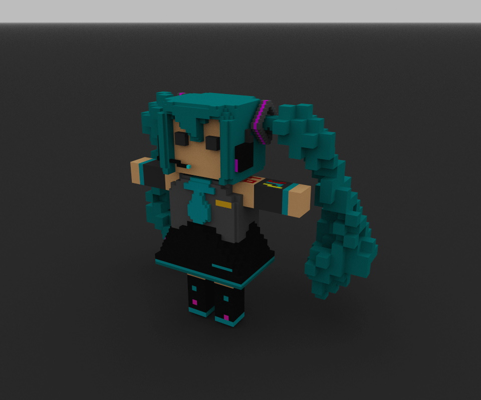
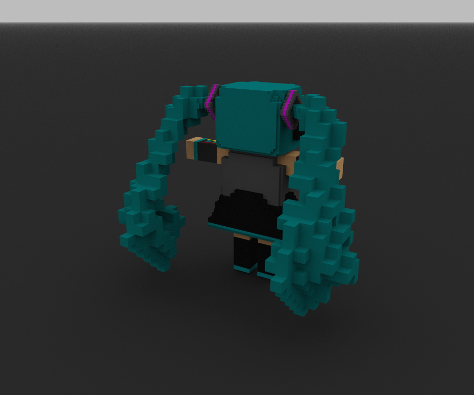
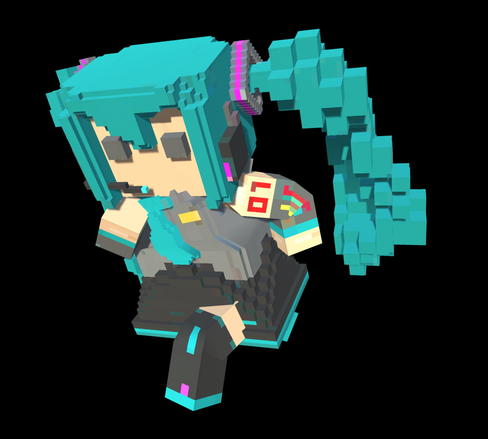

——我翻滚也要翻滚到你的面前。

Step1:找个模型
google输入miku模型，随意挑一个喜欢的就好。
Step2:弄进CC里边去
这部分挺扯淡的，因为能找到的miku模型好多都是mmd的，这时候有一大堆问题需要处理的。最后放弃了，即使是最简单的YYB Hatsune Miku_default_3 都有80M+的体积，面数还死多。行，那我就自己做一个吧。
Step3:自己设计一个Q版miku
打开体素工具MagicaVoxel，开干。
经过一系列的拙劣的模仿，终于弄出来一个像样的……fufu？
 源文件也放出来供各位使用吧。
Step4:先弄进Unity里边去
怎么弄呢？很简单，直接导——个鬼哟，还要绑骨骼刷权重呢。这时候就应该使出钞能力。
购买这个插件voxel-importer，至于插件，还是自己购买吧。我就不分享了。
然后就是按照教程一步一步生成，绑定骨骼，刷权重。（这两头发刷起来真恶心）
然后记得先保存成预设，这时候就可以使用unity的插件导出FBX。
Step5:新问题，texture2d是什么东西？
emmm，cc不支持texture2d格式啊，那么写个代码转一下吧。
Texture2D_IMG.csusing System.Collections; using System.Collections.Generic; using System.IO; using UnityEditor; using UnityEngine; public class Texture2D_IMG : MonoBehaviour { public Texture2D texture2D; string path = ""; void Start() { saveTexture2D(texture2D); } public void saveTexture2D(Texture2D texture) { path = AssetDatabase.GetAssetPath(texture); if (!string.IsNullOrEmpty(path) && File.Exists(path)) { path = Path.GetDirectoryName(path); } else { path = Application.dataPath; } byte[] bytes = texture.EncodeToPNG(); Debug.Log(path); string name = texture.name; // UnityEngine.Object.Destroy(texture); System.IO.File.WriteAllBytes(path + "/" + name + ".png", bytes); Debug.Log("write to File over"); UnityEditor.AssetDatabase.Refresh(); //自动刷新资源 } }
然后把导出来的图片丢进PS里边，选择图像-图像大小-硬边缘，并且放大一点。虽然说有误差，（有些边缘被不正常地放大缩小了，但是起码不模糊了）
Step6:好的，现在准备一下动画
直接去mixamo白嫖就好，记得挂梯子。
如果提示失败什么的，多上传几次fbx模型就好。
PS:下载动画的时候选择without skin。
然后就是导入unity，放好并且编辑好动画（其他编辑器太烂了。）
然后重新导出为FBX。
Step7:导入到CC
这一步很简单，但是我不了解CC，还是先去看一遍文档吧。